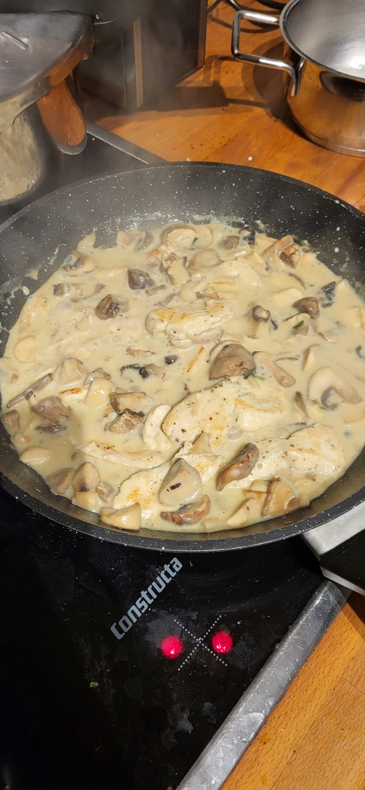

Home
Creamy Garlic Chicken

Description
Creamy mushroom and garlic sauce combined with juicy fried chicken. Recommended sides include rice and mashed potatoes.
Ingredients for 1 serving:
- 1 chicken breast or 180g
- 250g mushrooms
- 150g water
- 1 laughing cow wedge
- 3 cloves of garlic
- 8g vegetable broth powder
- 2g cornstarch
- 4g oil
- Salt and black pepper
Directions:
Cooking times may vary depending on your pan heat.
- Slice the mushrooms into bitesize pieces.
- Cut the chicken breast into 1cm thick strips.
- Peel and grate the garlic cloves.
- Add the water, broth and starch into a small glass and mix until combined.
- Start by adding the mushrooms to a dry pan on medium heat and add 50g of water. Let it simmer without a lid until the water has evaporated and the mushrooms have collapsed.
- Now add oil and fry them unter occasional stirring until brown, around 4-5 minutes.
- Push mushrooms to the side of the pan and add another touch of oil and fry the chicken for 1-1:30 minutes on each side until they get color.
- Add in grated garlic for 30 seconds. Add in the sauce and let it simmer for 2 minutes until it thickens.
- Now add in the laughing cow wedge and press it down with a spatula and combine everything slowly for 1 minute until creamy. Done!
Notes:
- This sauce is fantastic with some rice.
- Add hot jalapeno sauce for a spicy kick.